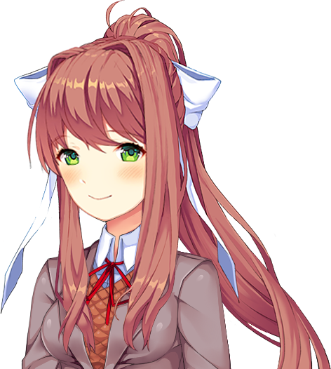
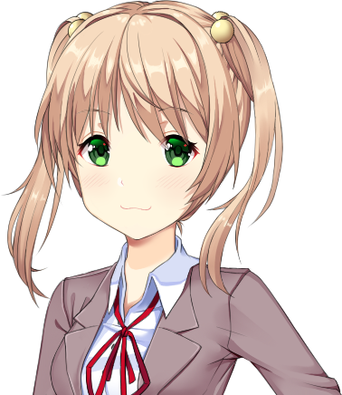
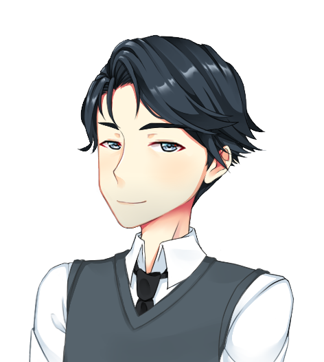
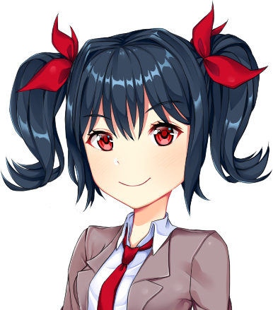
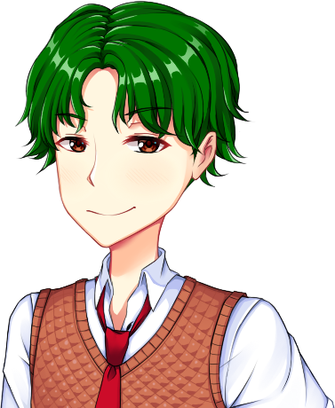

In many ways, your typical high school student.
Prior to joining the Literature Club, he was pretty lonely
and shut in - indulging in video games and anime.
Imbued with a snarky, dry sense of humour, our MC
may be a little dense and naive, but his heart's
always in the right place.
MoMC
A caring, loving figure, filled to the brim with the insight
and wisdom only a mother can possess. It's good to know
that amidst all of the drama and stresses of teenage life,
family will always be there for you. Should you listen to
her advice, or has the time away from home made her
too distant from her son?


Monika
The level headed leader of the club. It was Monika's love
for literature that created the Literature Club
as we know it. In many ways she's the model student -
intelligent, attractive and athletic. Alongside her presidential
duties, she's also a keen tennis player, an aspiring pianist,
amongst many other things. With aspirations that high and
this much responsibility, life must be awfully stressful for her...
Emi
Transfer student and our 100% original
and undateable character.
Also part of the school's track team,
so you know she's gonna be bouncing with energy.
Yet she still finds ways to be late
to class... but hey, listen to her relationship advice,
'cause it'll really give you a leg up.


Akechi Sakurai
The MC's homeroom teacher, and in many ways, also a mentor.
Possessing a fervent enthusiasm for the subject he teaches,
Sakurai makes learning about history enjoyable - well, as
enjoyable as it can be. His youth and sense of humour helps
his students really relate to him - which's good, because
the teenage years aren't easy, and MC needs as much help
as he can get! He's also tall, handsome and so dreamy...
Erm. S-so all the girls tell me.
Shiori
The MC's class rep
and one of Monika's close friends,
she's bluntly honest
but a very loyal friend.
Although she has an alternative style,
that doesn't subtract from
how diligent she can be
in her school duties.

PeePeePooPoo
Huge dicksmunch, likes cookies with raisins and zit-popping
in the shower. Chews loudly and is an overall asshole,
I bet he listens to Evanescence.